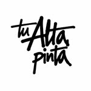

HTML
Estructura y organización del contenido de una página web.
PORTAFOLIO PERSONAL
Estudiante de Informática interesado en el diseño web, la tecnología y la creación de proyectos digitales.
Ideas que se convierten en proyectos.
UN POCO SOBRE MÍ
Soy David, estudiante del área de Informática. Me gusta aprender cómo funcionan las páginas web y usar herramientas digitales para desarrollar ideas creativas. En este portafolio comparto algunos de mis trabajos y lo que voy aprendiendo.
LO QUE ESTOY APRENDIENDO
Estructura y organización del contenido de una página web.
Colores, estilos, diseños adaptables y presentación visual.
Componentes y diseños que ayudan a crear sitios responsivos.
Creatividad, composición y edición de imágenes para proyectos.
TRABAJOS DESTACADOS
Estos son algunos proyectos que representan mis intereses y lo que voy desarrollando.

Proyecto de tienda de ropa urbana y outfits. La idea es presentar prendas, publicar novedades y promociones, y facilitar que los clientes consulten por redes sociales.
Una página para presentar mis habilidades, trabajos y aprendizajes utilizando una estructura clara y adaptable a celulares.
Prácticas escolares de diseño y tecnología para mejorar la organización visual, la creatividad y el manejo de herramientas informáticas.
HABLEMOS
¿Querés conocer más sobre mis proyectos? Podés escribirme por mis redes sociales.
Visitar Instagram